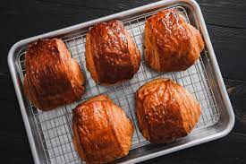

Chocolate Croissant

Description
Start your day off right with a buttery and flaky homemade chocolate croissant. This indulgent pastry is filled with rich, melted chocolate for a sweet breakfast treat that will transport you to a French bakery.
Ingredients
- ½ cup water
- ½ cup milk
- ¼ cup sugar
- 2 teaspoons salt
- 1 packet instant dry yeast
- 3 tablespoons unsalted butter, softened
- 1 ¼ cups cold unsalted butter, cut into ½-inch (1 cm) thick slices
- 1 egg, beaten
- 2 bars sweetened chocolate bar
Steps
- In a large bowl, mix the flour, water, milk, sugar, salt, yeast, and butter.
- Once the dough starts to clump, turn it out onto a clean counter.
- Lightly knead the dough and form it into a ball, making sure not to over-knead it.
- Cover the dough with plastic wrap and refrigerate for one hour.
- Slice the cold butter in thirds and place it onto a sheet of parchment paper.
- Place another piece of parchment on top of the butter, and beat it with a rolling pin.
- Keeping the parchment paper on the butter, use a rolling pin to roll the butter into a 7-inch (18 cm) square, ½-inch (1 cm) thick. If necessary, use a knife to trim the edges and place the trimmings back on top of the butter and continue to roll into a square.
- Transfer the butter layer to the refrigerator.
- To roll out the dough, lightly flour the counter. Place the dough on the counter, and push the rolling pin once vertically into the dough and once horizontally to form four quadrants.
- Roll out each corner and form a 10-inch (25 cm) square.
- Place the butter layer on top of the dough and fold the sides of the dough over the butter, enclosing it completely.
- Roll the dough with a rolling pin to seal the seams, making sure to lengthen the dough, rather than widening it.
- Transfer the dough to a baking sheet and cover with plastic wrap. Refrigerate for 1 hour.
- Roll out the dough on a floured surface until it’s 8x24 inches (20x61 cm).
- Fold the top half down to the middle, and brush off any excess flour.
- Fold the bottom half over the top and turn the dough clockwise to the left. This completes the first turn.
- Fold the bottom half over the top and turn the dough clockwise to the left. This completes the first turn.
- Cover and refrigerate for one hour.
- Roll out the dough again two more times, completing three turns in total and refrigerating for 1 hour in between each turn. If at anytime the dough or butter begins to soften, stop and transfer back to the fridge.
- After the final turn, cover the dough with plastic wrap and refrigerate overnight.
- To form the croissants, cut the dough in half. Place one half in the refrigerator.
- Flour the surface and roll out the dough into a long narrow strip, about 8x40 inches (20x101 cm).
- With a knife, trim the edges of the dough.
- Cut the dough into 4 rectangles.
- Place the chocolate on the edge of the dough and roll tightly enclosing it in the dough.
- Repeat with the other half of the dough.
- Brush the croissants with the beaten egg. Save the rest of the egg wash in the fridge for later.
- Place the croissants in a warm place to rise for 1-2 hours.
- Preheat oven to 400°F (200°C).
- Once the croissants have proofed, brush them with one more layer of egg wash.
- Bake for 15 minutes or until golden brown and cooked through. Serve warm.